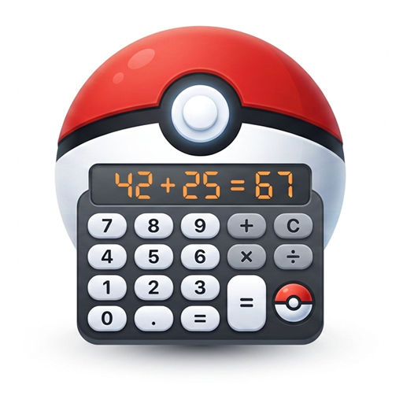

Pokémon Champions 用ダメージ計算ツール（Windows デスクトップアプリ）
Pokémon Champions の対戦向けダメージ計算ツールです。一番の特徴は音声操作。 「ガオガエンのHAいじっぱりフレアドライブでH2振りメガメタグロスに攻撃」のように話しかけるだけで、 種族・性格・技・相手の入力までまとめて反映されます。もちろん手入力でも使えます。
ダウンロード（Windows / zip）最新版は Releases ページから確認できます
pokeCalcを起動.bat をダブルクリックする（app フォルダの中身は直接触らなくてOK）インストーラー形式ではなく、そのまま実行できる展開型（ポータブル版）です。アンインストールしたい場合はフォルダごと削除するだけで大丈夫です。